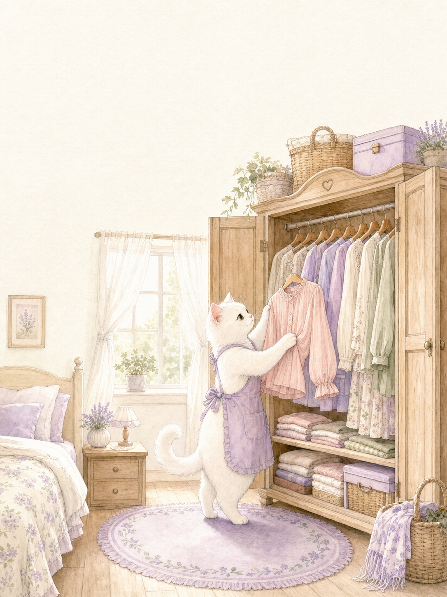
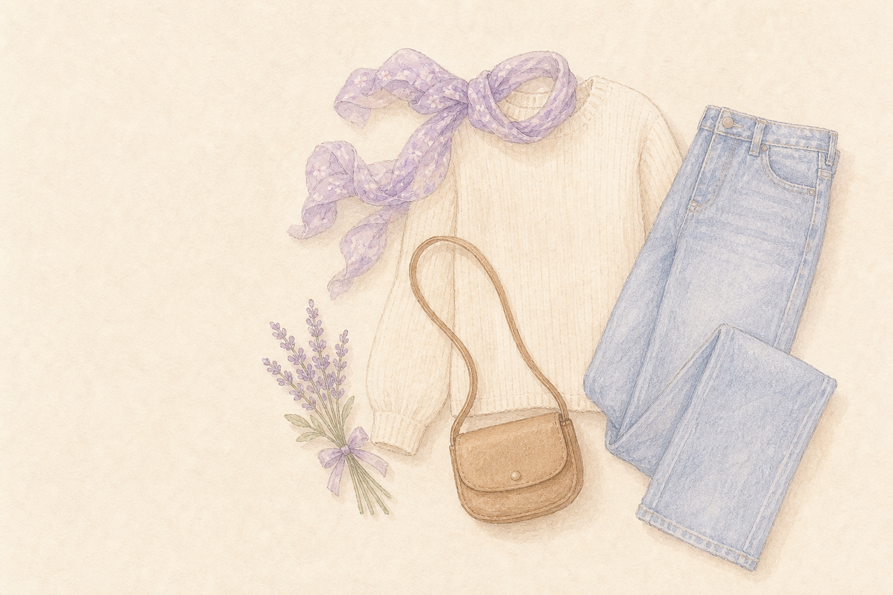

今天也和

真实衣橱
让衣橱更懂你
把衣物交给我看看识别后由你确认
🐾 🔒 原图仅用于本次本地处理，不会上传
AI 结果只供参考，请按实物修改后再保存。
购前衣橱关系判断
把想买的新衣交给我看看
🐾 🔒 AI 只在本机生成标签和相似度
本地 AI 未完成，但图片没有丢失。请先确认基础标签，搭配和缺口规则仍可继续运行。
还没有保存过购衣决定。
只由你掌控
导出的备份含衣物照片和记录，请妥善保存。导入会覆盖当前衣橱。
模型尚未下载。首次识别将在 Wi-Fi 下下载本地模型。
清除浏览器网站数据会删除本地衣橱，请先导出备份。
只修改衣物信息
真实天气 · 本地衣橱
选择城市后，显示当天真实天气和本机衣橱推荐。
天气数据：Open-Meteo；中国区划坐标：geotool-cn 2.0.1 本地离线数据。位置和天气缓存只保存在这台设备。